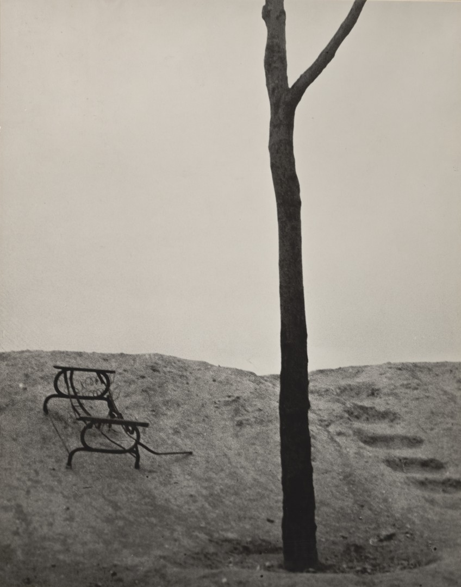

Through the lack of context and their subversive edgy characteristics, edgeland sites can harbour suspicion. These are out of town areas where the socially marginal meet for questionable or immoral activities. These dystopias are enforced and exploited through film and tv. Throughout the 1990's the backdrop of the indie crime movie was an edgeland site. The place where money is exchanged, money is stolen, and the criminal-protagonist cover is walking the dog. Of course, the edginess is hyperbole, visually enhanced with banal industrial architecture, debris and monotonous colour balances. Film portrays them as landscapes where concluding conflict is played out. In reality, these areas, besides the occasional glimpses of marginal society (the attempted dog theft) spurring suspicion, are not straightforward dystopias but banal urban peripheries with complex social processes.
Author of the term:
The aura of excitement which goes with the apparent lawlessness of the edgelands has been exploited in such films of the 1990s as Reservoir Dogs, Pulp Fiction, Seven, Things to Do in Denver When you’re Dead, Fargo and The Straight Story. (Shoard, 2000, p. 130)
[[Roberts, M. S.]] co-author of edgelands Journeys Into England's True Wilderness (2011):
As a " " landscape photographer " " I constantly need reminding, that despite the above definitions, landscape is a “highly differentiated discourse on representing space†(Bate, 2009, p. 93).
Following a unique interpretation of a site whether that is through geography, autobiography, or metaphor, will create original work and avoid cliche.
Bibliography
Bate, D. (2009) Photography: The Key Concepts. Berg.
Wells, L. (2011) Land Matters: Landscape Photography, Culture and Identity. Bloomsbury Publishing.
French landscape theoretical term for indeterminate space, defined by Spanish architect, Ignasi de Solà - Morales, stating:
It is impossible to capture in a single English word or phrase the meaning of terrain vague. The French term terrain connotes a more urban quality than the English land; thus terrain is an extension of the precisely limited ground fit for construction, for the city.†(de Solà - Morales, 2013, p. 26).
Breaking down the etymology
The term has duality stemming from Latin: “Vague descends from vacuus, giving us “vacant†and “vacuum†in English, which is to say “empty, unoccupied,†yet also “free, available, unengaged.”
A second meaning superimposed on the French vague derives from the Latin vagus, giving “vague†in English, too, in the sense of “indeterminate, imprecise, blurred, uncertain.†(de Solà - Morales, 2013, p. 26).
Solà - Morales uses the french term ‘terrain vague’ because the English vocabulary for these pockets of vacant landscape have negative connotations such as wasteland.
My favourite explanation
Stanka Radović has a clear definition in the essay ‘on the threshold’ - an essay using the Andrei Tarkovsky 1979 film, Stalker, to explore the term as a utopia:
“... terrain vague escapes and challenges rigid definitions. Is it urban or is it natural? Is it a concept or a concrete place? Free or forlorn? The term “terrain vague†translates into English as “wasteland,†“derelict area,†or “vacant land,†and refers to abandoned or unoccupied portions of urban land that remain available for spontaneous use.†(Radović, 2013, p. 114)
Early photography
Man Ray Etude pour terrain vague , 1929

Before de Solà - Morales, Man Ray, inspired by Eugène Atget, captioned these photographs 'Terrain Vague'.
Bibliography
Radović, S. (2013) ‘On the Threshold: Terrain Vague as Living Space in Andrei Tarkovsky’s Stalker’, Terrain Vague: Interstices at the Edge of the Pale.
de Solà - Morales, I. (2013) ‘Terrain Vague’, Terrain Vague: Interstices at the Edge of the Pale.
… the conservation movement, while well intentioned, has sought to freeze living systems in time. It attempts to prevent animals and plants from either leaving or–if they do not live there already–entering. It seeks to manage nature as if tending a garden. Many of the ecosystems, such as heath and moorland, blanket bog and rough grass, that it tries to preserve are dominated by the low, scrubby vegetation which remains after forests have been repeatedly cleared and burnt. This vegetation is cherished by wildlife groups, which prevent it from reverting to woodland through intensive grazing by sheep, cattle and horses. It is as if conservationists in the Amazon had decided to protect the cattle ranches, rather than the rainforest.  (Monbiot, 2014, p. 8)
Management of moorland through cutting.
Out of 218 nations, the UK ranks 189th for the intactness of its living systems (rspb, 2016)
… In Britain, as in most of Western Europe, land is managed; it follows that vistas or landscapes are constructed, which means that a sense of aesthetic principles, as well as social mores, are in play. (Wells, 2011, p. 28)
Bibliography
Monbiot, G. (2014) Feral: Rewilding the Land, the Sea, and Human Life. University of Chicago Press.
E. M. Forster in 1964 wrote that two world wars had enveloped the wildness of Britain. “‘Two great wars demanded and bequeathed regimentation,’ wrote E. M. Forster in 1964, ‘science lent her aid, and the wildness of these islands, never extensive, was stamped upon and built over and patrolled in no time. There is no forest or fell to escape to today, no cave in which to curl up, and no deserted valley.’†(Macfarlane 2009, p.8)
Jonathan Raban claims Britain lost its wilderness much earlier in the 1860s with population and industry:
so thickly peopled, so intensively farmed, so industrialised, so citified, that there was nowhere to go to be truly alone, or to have … adventures, except to sea. (Jonathan Raban Cited in (Macfarlane 2009, p.8))
Macfarlane states population and the road network is really to blame for the lack of wilderness or remoteness:
In Britain, over sixty-one million people now live in 93,000 square miles of land. Remoteness has been almost abolished, and the main agents of that abolition have been the car and the road. Only a small and diminishing proportion of terrain is now more than five miles from a motorable surface. There are nearly thirty million cars in use in Britain, and 210,000 miles of road on the mainland alone. (Macfarlane 2009, p.9)
George Monbiot argues that there is a wildness paradox, that Britain's gardens have more wildlife in them than barren uplands:
Spend two hours sitting in a bushy suburban garden anywhere in Britain, and you are likely to see more birds, and of a wider range of species, than you would while walking five miles across almost any open landscape in the uplands. (Monbiot 2014, p.69)
Liz Wells argues Britain is a managed land and notes the paradox of the pictorial countryside as safe, clean, and undisturbed rather than managed.
...British land is managed – there is no wilderness; even the coastal littoral is overseen (by the Environment Agency). It follows that landscapes and vistas are human constructs, which means that aesthetic principles, as well as social mores, were and are in play within the actual shaping of land. Pictorial renderings of countryside as pastoral depict Britain as undisturbed and undisturbing, thus contributing to constructing a simplified and benign rural imaginary, to picturing countryside as safe. (Wells 2011, p.164)
The lack of wild animals like wolves, beaver and boar:
So few wild creatures, relatively, remain in Britain and Ireland: so few, relatively, in the world. Pursuing our project of civilisation, we have pushed thousands of species towards the brink of disappearance, and many thousands more over that edge. The loss, after it is theirs, is ours. Wild animals, like wild places, are invaluable to us precisely because they are not us. They are uncompromisingly different. (Macfarlane 2009, p.306,307)
References
Macfarlane, R., 2009. The Wild Places, Granta Books.
Monbiot, G., 2014. Feral: Rewilding the Land, the Sea, and Human Life, University of Chicago Press.
Wells, L., 2011. Land Matters: Landscape Photography, Culture and Identity, I.B.Tauris.